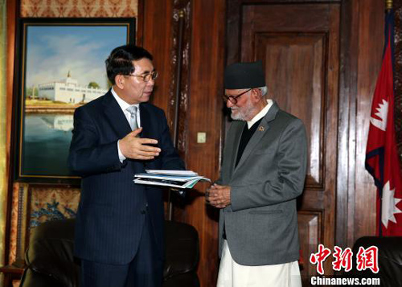
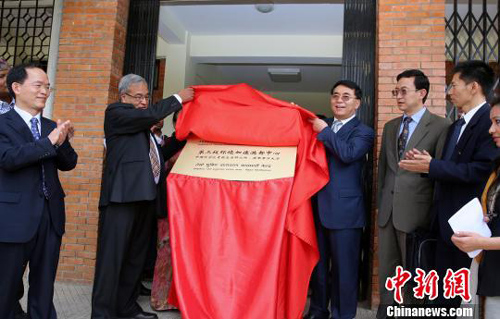

当地时间4月7日下午，尼泊尔总理苏希尔·柯伊拉腊在加德满都会见到访的中国科学院院长白春礼一行，双方就促进两国关系发展及加强科技教育领域合作进行了交流。
柯伊拉腊表示，多年来中国的发展取得了令人瞩目的成就，目前尼泊尔政府正在努力促进经济发展，中国有许多经验值得尼泊尔学习借鉴。作为友好邻国，尼中两国在各领域保持着密切交流与合作，感谢中国对尼泊尔政治进程与经济社会发展的大力支持。
白春礼向柯伊拉腊介绍了此次访尼取得的成果。他说，近年来中尼两国在科研和教育领域的合作日益密切，有利于促进双边关系进一步发展。此次访问期间，中国科学院与尼泊尔高校签署了合作协议，希望以此促进双方在科技领域的交流与合作，为尼泊尔经济发展提供支持。
中国驻尼泊尔大使吴春太一同参加会见。
当天，中国科学院青藏高原研究所与尼泊尔特里布文大学签署合作备忘录，共同成立“第三极环境加德满都研究中心”。中国科学院成都山地灾害与环境研究所与特里布文大学签署了仪器捐赠备忘录。中国科学院青藏高原地球科学卓越创新中心还与国际山地综合发展中心签署了“第三极”环境国际计划备忘录。白春礼出席相关协议签署和机构揭牌仪式。
相关链接：中国与尼泊尔加强环保领域合作

白春礼向尼泊尔总理苏希尔·柯伊拉腊介绍中科院相关情况。 符永康 摄

白春礼出席“第三极环境加德满都研究中心”揭牌仪式。 符永康 摄